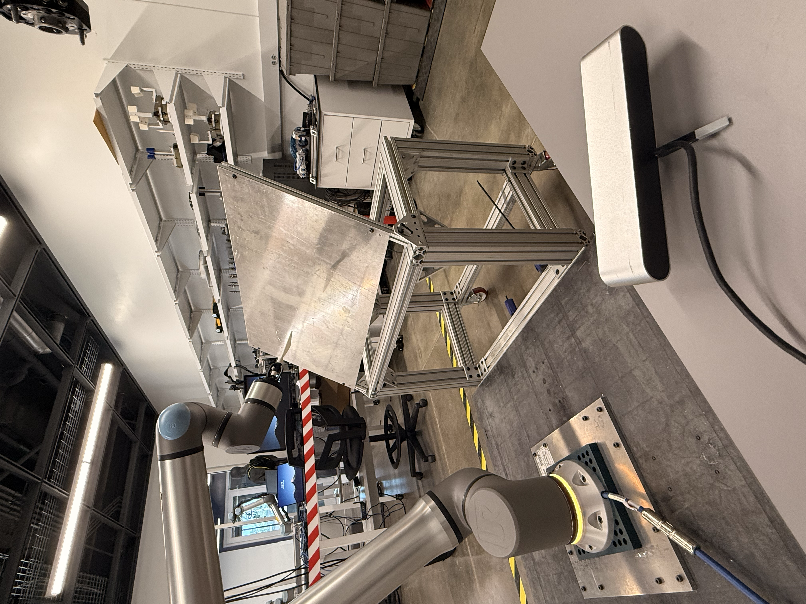
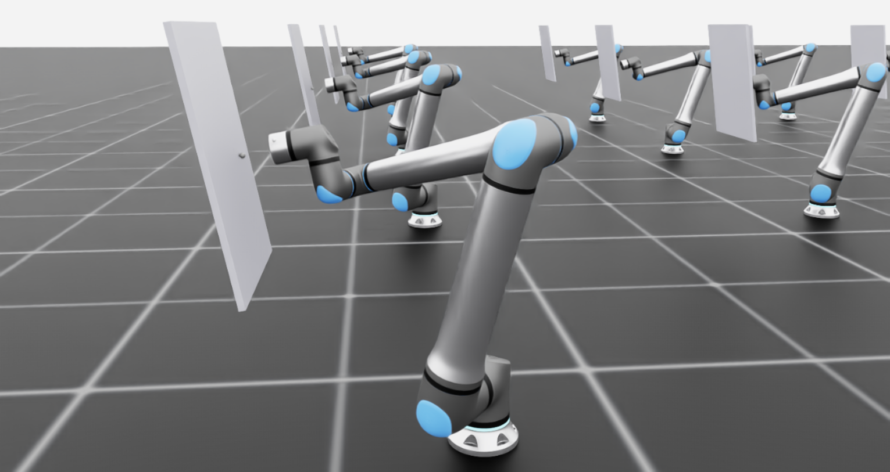

Savannah River National Laboratory
Software Engineering Intern
Jun 2026 — Aug 2026 · Aiken, SC
Trained a reinforcement learning policy in Isaac Sim and Isaac Lab that taught a UR-20 robotic arm a contact-rich task: scraping dried radioactive waste from the interior surfaces of storage tanks. Owned the prototype end to end and delivered a working system inside a ten-week internship.
Integrated Isaac ROS cuMotion and nvblox to reconstruct the workcell in 3D and generate collision-free motion plans, so learned trajectories could be validated in simulation before being committed to real hardware. Most of the time went into the unglamorous part, calibrating ZED and RealSense depth cameras, aligning point clouds, and tracking down sensor dropouts that only appeared during live runs.